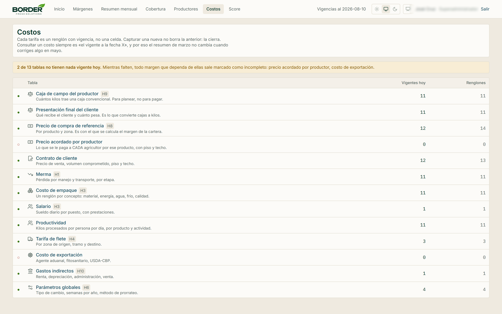
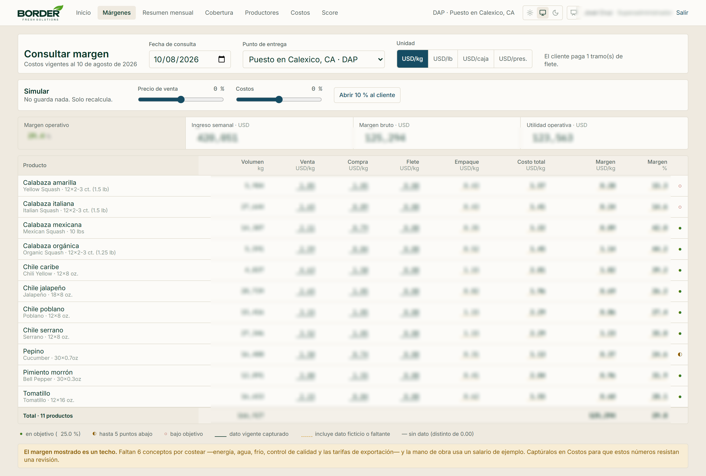
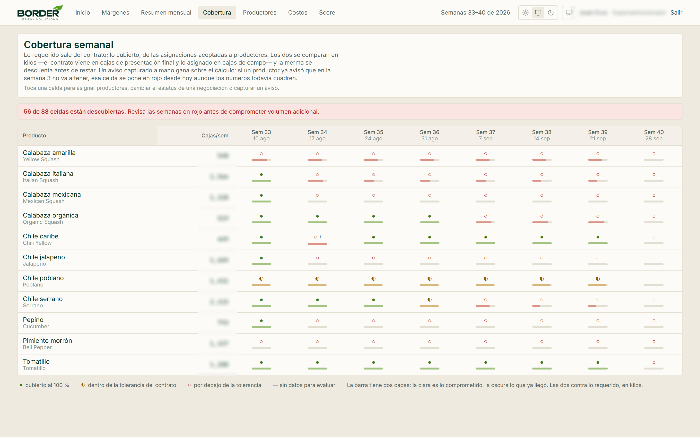
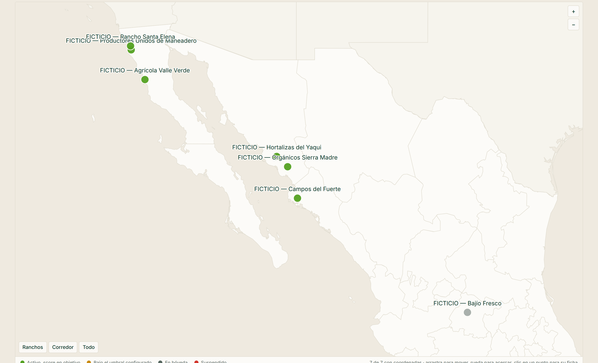

Lo que cambió al dejar la hoja de cálculo
Una comercializadora de producto agrícola fresco —compra a agricultores en México, empaca en Mexicali, vende en Estados Unidos— llevaba su operación completa en Excel: costos, márgenes, compromisos con clientes y proyecciones. Esto es lo que cambió al reemplazarlo, hallazgo por hallazgo.
Doce fugas encontradas · doce corregidas por diseñoEl Excel no estaba mal pensado. Estaba mal sostenido.
Conviene decirlo antes que nada, porque explica por qué el proyecto era viable: el modelo conceptual del libro era correcto. Quien lo armó entendía su negocio. Lo que no aguantaba era la estructura — y una hoja de cálculo no avisa cuando se rompe.
La revisión del archivo encontró doce fugas. Ninguna era un error de aritmética: todas eran consecuencias de lo que una celda no puede hacer. Una celda no tiene fecha, así que un precio nuevo borra al anterior. Una celda no sabe de unidades, así que cajas de un tipo se restan contra cajas de otro. Una fórmula copiada a mano en once columnas se desincroniza en la doceava y nadie lo nota.
El síntoma que lo resume
El modelo devolvía un retorno de la inversión de menos de un mes. No por un error de fórmula: era la suma de tener la mano de obra en cero, la merma desconectada, la renta sin cobrar y la depreciación sin calcular. Un número así no resiste la revisión de un socio ni de un banco — y era el número que estaba a punto de circular.
Un solo idioma: el kilogramo
Tres actores hablan de la misma mercancía en tres unidades. El agricultor cuenta cajas de campo. El cliente cuenta cajas de presentación final —doce bolsas de ocho onzas, veinticuatro piezas—. El negocio se mide en kilos. Mientras la conversión vivió en celdas sueltas, las tres versiones se contradecían.
Los mismos once productos aparecían con tres nomenclaturas distintas según la hoja. Sin una clave única, el módulo de costos y el financiero no se podían cruzar.
Dos hojas daban conversiones distintas para la misma caja: la misma cifra en libras, redondeada diferente. Sobre el volumen mensual de un solo producto, esa diferencia mueve dinero real.
El kilogramo es la única unidad que se almacena. Libras, cajas de campo y presentación final se derivan con factores guardados en la base, cada uno con su vigencia.
La misma cantidad nunca se guarda en dos unidades. Es la regla que hace imposible que dos pantallas se contradigan.
El error que solo se ve cuando hay un sistema
Al implementarlo apareció una fuga que la revisión original no había detectado: la columna «cajas por semana» no decía de qué caja hablaba. En un lado eran cajas del cliente y en otro cajas del agricultor, y se estaban restando entre sí. Son unidades distintas, con pesos distintos, y una además ya trae descontada la merma.
Hoy los dos lados se convierten a kilos antes de compararse, y la merma se descuenta del lado que corresponde. La regla del negocio quedó explícita: la merma reduce los kilos vendibles, no los comprados —al agricultor se le paga sobre el bruto.
Cada precio es un renglón con fecha, no una celda
Esta es la razón principal del proyecto. Un precio en una celda solo puede decir cuánto vale hoy. No puede decir cuánto valía en marzo — y sin eso, corregir un costo reescribe el pasado.
Un mismo producto aparecía con un precio de compra en su hoja y con otro en el modelo mensual, sin ninguna fecha que los separara. Una tercera hoja los llamaba «actual» y «nuevo», sin decir desde cuándo.
Nadie podía afirmar cuál era el bueno, y el resumen del mes pasado cambiaba si alguien corregía una celda hoy.
Cada tarifa lleva vigencia desde y vigencia
hasta. Capturar una nueva no borra la anterior: la cierra.
Consultar un costo siempre es «el vigente a la fecha X». Por eso el resumen de marzo no cambia cuando alguien corrige algo en mayo.

Trece tablas de tarifas, cada una versionada. La columna de la derecha separa lo vigente hoy del histórico completo: nada se pierde al cambiar un precio. El aviso ámbar señala las tablas que todavía no tienen nada capturado, y todo margen que dependa de ellas sale marcado como incompleto en vez de fingir un número.
La consecuencia que no se ve en la captura
La base de datos impide por construcción que dos renglones de la misma serie se traslapen en el tiempo. No es una validación del formulario que alguien pueda rodear: es una restricción del motor. Un histórico con huecos o con dos precios válidos el mismo día no se puede escribir.
Un margen que resiste una revisión
Cuatro de las doce fugas inflaban el resultado. Ninguna era visible en la hoja: había que leer las fórmulas una por una para encontrarlas.
La merma se calculaba y no se usaba
Las hojas de producto descontaban la merma correctamente. El modelo mensual, en el renglón rotulado «volumen neto vendible», apuntaba al volumen bruto. El ingreso quedaba sobrestimado en el porcentaje completo de la merma, y eso inflaba el resultado operativo alrededor de un veinte por ciento.
El empaque no incluía mano de obra
De todos los conceptos de empaque, solo estaba lleno el material. Mano de obra, energía, agua, cámara de frío y control de calidad estaban en blanco. Es lo más delicado del archivo: toda la tesis del negocio es el arbitraje de mano de obra, y la mano de obra por kilo no estaba costeada. Lo que se ponga ahí sale directo del margen.
Los indirectos se repartían en partes iguales
La fórmula dividía el gasto general entre doce columnas, sin mirar volumen ni ingreso. Una de esas columnas era un producto de relleno con cero kilos y cero venta: absorbía cerca del ocho por ciento de los gastos generales del negocio. Hoy el prorrateo es por ingreso o por kilo, y un producto sin base absorbe cero por construcción.
Las palancas de escenario no movían el costo principal
El libro tenía una palanca de «incremento en costos». Movía flete, empaque e indirectos — pero el precio de compra al productor estaba capturado a mano en todos los productos reales, así que la palanca no tocaba el sesenta y dos por ciento de la estructura de costo. Y el resumen ejecutivo aplicaba una fórmula distinta, con lo que las dos mitades del archivo se contradecían.

Compra, flete, empaque, exportación y el costo total, columna por columna, hasta el margen. Las cifras van veladas en esta página; lo que importa aquí es la forma. Abajo, la leyenda distingue con subrayado continuo el dato capturado y con punteado el que todavía depende de algo sin capturar: el sistema dice de qué pie cojea cada número en lugar de presentarlos todos con la misma confianza.
Lo que hace defendible el número nuevo
Al corregir las fugas el resultado baja, y alguien iba a preguntar por qué. El sistema incluye una reconciliación que parte de la configuración original del Excel y aplica una corrección a la vez, midiendo cuánto mueve cada una. No es una función del producto: es el documento que permite defender el cambio frente a quien ya había visto el número anterior.
Comprometer volumen viendo lo que ya está cubierto
Una retícula de semanas por producto contesta una sola pregunta: ¿lo que tengo asignado alcanza para lo que me comprometí a entregar? Es trivial de enunciar y no de calcular, porque los dos lados vienen en unidades distintas y hablan de kilos distintos.
El volumen anual se calculaba como cajas semanales por cuatro. Cuatro por doce son cuarenta y ocho semanas, pero el compromiso con el cliente son cincuenta y dos: el año se subestimaba cerca de un ocho por ciento.
Y la comparación entre lo comprometido y lo asignado restaba cajas contra cajas de distinto tipo.
Las semanas por año son un parámetro con vigencia, no una constante enterrada en una fórmula.
Los dos lados se convierten a kilos antes de compararse. Cada celda dice si está cubierta, dentro de la tolerancia del contrato o por debajo — y un aviso capturado a mano gana sobre el cálculo.

Ocho semanas hacia adelante. La barra tiene dos capas: la clara es lo comprometido y la oscura lo que ya está asignado. El aviso rojo de arriba cuenta las celdas descubiertas antes de que alguien se comprometa a más volumen. La columna de cajas comprometidas va velada en esta página.
El detalle que la hoja no podía tener
Si un agricultor avisa por teléfono que en tres semanas no va a tener producto, ese aviso se captura y la celda se pone en rojo desde hoy, aunque los números todavía cuadren. Lo que alguien sabe vale más que lo que la fórmula calcula, y el sistema le da preferencia.
El padrón dejó de ser una lista de teléfonos
A quién se le compra es una decisión con consecuencias de costo: la zona de origen determina el flete, la distancia al cruce determina la merma, y tener o no empacadora determina si el producto pasa por Mexicali.

Cada productor con su zona, sus cultivos, su distancia al cruce y su capacidad. Los nombres que aparecen aquí son ficticios y el sistema los marca como tales: son datos de demostración, rotulados «FICTICIO» en la propia base para que nadie los confunda nunca con un padrón real.
Evaluación congelada
Los productores se califican con una ponderación configurable. Lo importante no es el puntaje sino cómo se guarda: la evaluación se congela junto con los pesos que se usaron. Si mañana la dirección cambia la ponderación, las evaluaciones pasadas no se reescriben. Una calificación de junio sigue diciendo lo que decía en junio, con el criterio de junio.
Análisis de datos
Conviene ser explícito, porque hoy todo se anuncia como IA y en este sistema decir eso sería falso. No hay ningún modelo de lenguaje, ninguna red neuronal y ningún modelo predictivo entrenado. Tampoco hay una dependencia de ningún proveedor de inteligencia artificial.
Qué hay, entonces
- ✓Un motor de cálculo determinista. Toda la aritmética de dinero corre en funciones puras, con decimales exactos —nunca con números de punto flotante— y cada regla de negocio tiene su prueba automatizada. El mismo dato de entrada da el mismo resultado siempre.
- ✓Simulación de escenarios. Palancas independientes para precio de venta, precio de compra y costos, que recalculan la cartera completa sin guardar nada. Responden «qué pasa si», no «qué va a pasar».
- ✓Proyección de cobertura. Ocho semanas hacia adelante, cruzando compromisos contra asignaciones. Es aritmética sobre datos capturados, no un pronóstico.
- ✓Prorrateo y reconciliación. Reparto de gastos indirectos por ingreso o por kilo, y una escalera que explica renglón por renglón la diferencia contra el modelo anterior.
- ✓Calificación ponderada de proveedores. Pesos configurables por la dirección y evaluación congelada al momento de emitirla. Es un modelo de decisión explícito, auditable y explicable — no aprende de los datos ni cambia solo.
Por qué se diseñó así
Porque el resultado tiene que ser defendible ante un socio, un banco o una auditoría. Un número que sale de un modelo probabilístico no se puede explicar renglón por renglón, y este negocio ya tuvo el problema de presentar cifras que no resistían una revisión. La exigencia aquí era la contraria: que cada cifra se pueda rastrear hasta el dato capturado que la produjo, con la fecha en que estaba vigente y el nombre de quien la capturó.
Hay lugares donde la predicción aportaría —pronóstico de demanda por temporada, detección de precios atípicos, sugerencia de asignación entre productores—. Son extensiones naturales una vez que hay historia capturada, y hoy no están construidas. Decirlo claro vale más que insinuar lo contrario.
Lo que sí es infraestructura seria
Bitácora de quién cambió qué y cuándo, permisos por rol que separan a quien mueve costos de quien mueve precios de venta, aislamiento entre empresas, y una batería de pruebas automatizadas que corre en cada cambio — incluidas pruebas que vigilan que nadie vuelva a introducir los errores ya corregidos.
Las doce fugas, una por renglón
Once se encontraron revisando el archivo. La última apareció al implementar, que es cuando los supuestos se topan con el código.
| Clave | En la hoja de cálculo | En el sistema |
|---|---|---|
| H1 | La merma se calculaba y el estado de resultados usaba el volumen bruto. | Reduce los kilos vendibles; al agricultor se le paga sobre el bruto. |
| H2 | La palanca de costos no tocaba el 62 % de la estructura. | Palanca propia para compra, venta y costos, aplicada a todo. |
| H3 | El empaque solo tenía material; la mano de obra estaba en blanco. | Un renglón por concepto: material, mano de obra, energía, agua, frío, calidad. |
| H4 | El flete era una constante única para todos los orígenes. | Tarifa por zona, tramo y destino, con las rutas reales conectadas. |
| H5 | Los indirectos se dividían en partes iguales entre doce columnas. | Prorrateo por ingreso o por kilo; sin base, absorbe cero. |
| H6 | El año tenía 48 semanas por multiplicar por cuatro. | Semanas por año es un parámetro con vigencia. |
| H7 | Tres nomenclaturas para los mismos once productos. | Clave única por producto, con alias para cada nombre comercial. |
| H8 | Dos precios distintos para el mismo producto, sin fecha que los separara. | Precios versionados: consultar es siempre «el vigente a la fecha X». |
| H9 | Conversiones kilo/caja distintas entre hojas. | El kilo es canónico; las cajas se derivan con factores versionados. |
| H10 | Inversión contemplada, pero renta y depreciación en cero. | Gasto recurrente capturado por concepto, con vigencia. |
| H11 | Un retorno de inversión que no resistía una revisión externa. | Consecuencia corregida al resolver las anteriores. |
| H12 | «Cajas por semana» sin decir de qué caja hablaba. | Ambos lados en kilos antes de compararse, con la merma del lado correcto. |
Nada de lo que se ve aquí es un dato real
Las capturas de pantalla de esta página provienen del sistema en funcionamiento, pero toda la información sensible fue retirada antes de publicarlas:
- Las cifras van veladas. Precios de compra y de venta, volúmenes, márgenes e ingresos están tapados de forma irreversible en las imágenes. No se difuminaron: se destruyeron los pixeles.
- Los nombres de clientes finales no aparecen. Ninguna captura muestra a quién se le vende.
- Los nombres de productores son inventados. El propio sistema los marca como «FICTICIO» en la base de datos: son datos de demostración, no un padrón real.
- Los nombres de usuario están retirados de la barra superior de cada pantalla.
- Las magnitudes del texto son proporciones, no montos. Donde se menciona un porcentaje, describe la estructura del modelo sin revelar el tamaño del negocio.
Los porcentajes y los hallazgos descritos sí son reales: salen de la revisión del archivo original. Lo que no se publica es ninguna cantidad que permita reconstruir la operación, los precios o la cartera de clientes de la empresa.